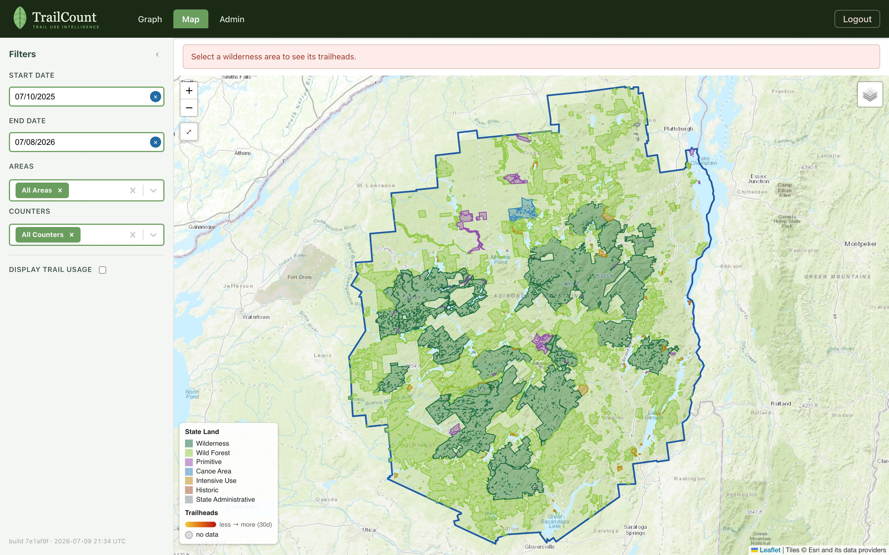
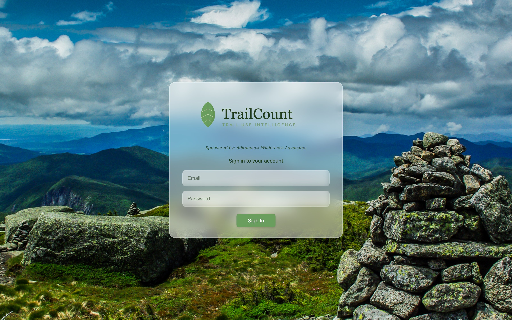
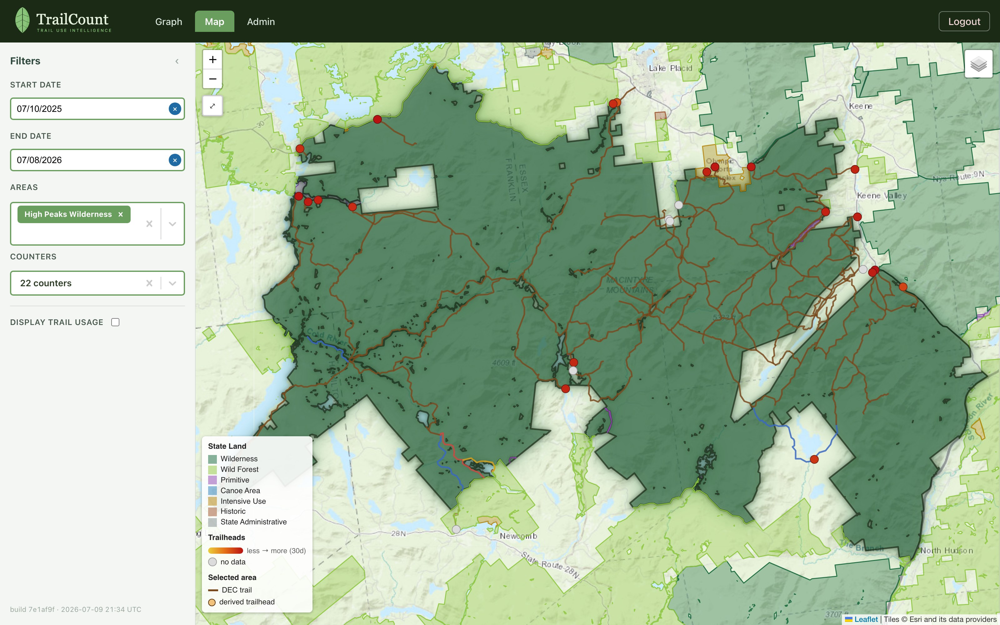
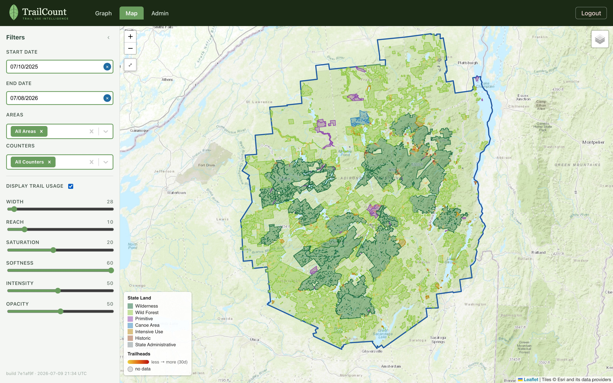
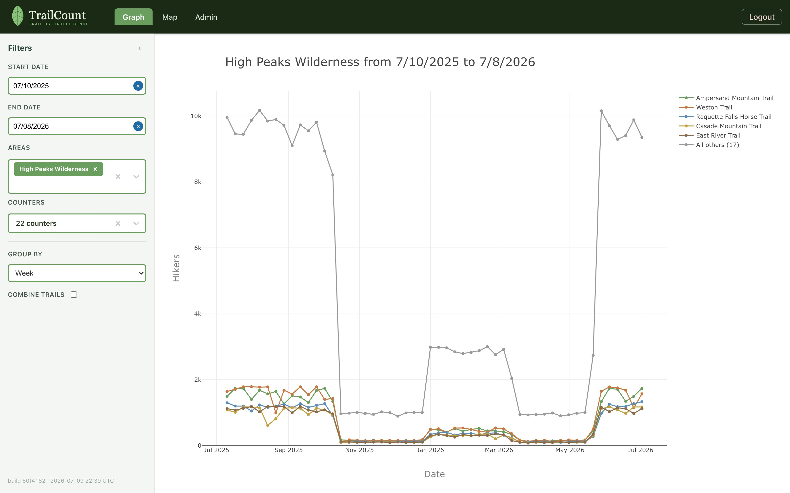
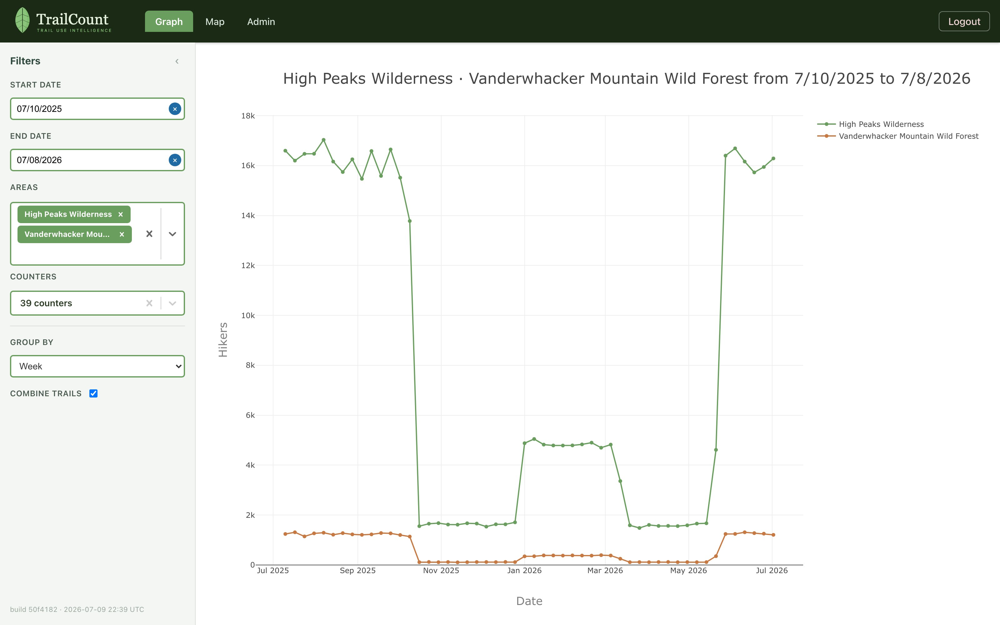
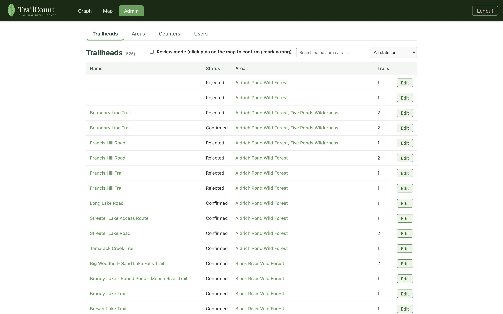
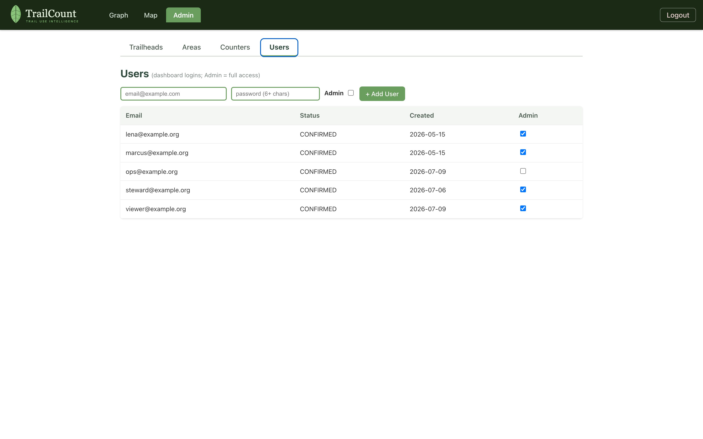
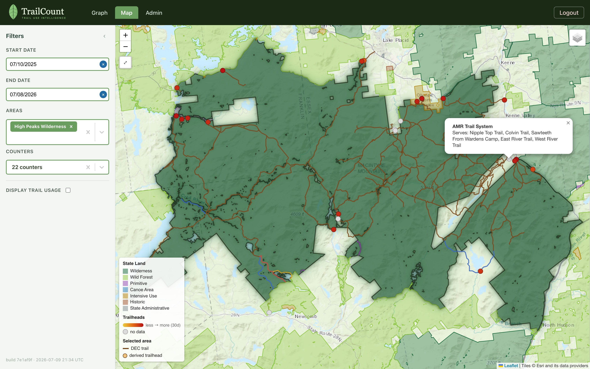

Trail-use intelligence for wild places
TrailCount pairs rugged, solar-friendly trail counters with a cloud platform that turns raw hiker detections into decisions: where pressure is building, which trailheads carry the load, and how use moves with the seasons. This short tour walks through every page of the dashboard using the demo, populated with simulated data — the same software built to serve real devices in the Adirondacks.

Use the contents on the left, the arrows below, or your keyboard’s ← → keys to page through.
Sign in and land on the map
Access is by invitation — an administrator creates your account (more on that in the Admin chapter). Signing in drops you straight onto the map, framed to the whole park, with your filter selections remembered per session as you move between views.

One filter panel, every view
The left panel reads identically on the Graph and Map: a date range, the wilderness Areas you care about, and the individual Counters within them. Below the divider live the view-specific controls — grouping and combining on the Graph, the usage heat controls on the Map.
- Dates default to the trailing 52 weeks, ending yesterday (today’s data hasn’t uploaded yet).
- Areas is a multi-select — pick several to compare them side by side.
- Counters auto-fills with the selected areas’ counters; prune or search to focus.
- The footer shows the exact build you’re running — handy when confirming a fresh deploy.
The park, its lands, and its trailheads
The map layers the things stewards actually reason about: official state-land unit boundaries (from the Adirondack Park Agency’s land classification, simplified so shared borders stay coincident), DEC trail lines colored by blaze, and trailhead markers colored by recent traffic. Selecting an area outlines it with a glow, frames the view, and reveals its trails and trailheads.

- Ten switchable basemaps (Esri topo by default) — terrain, satellite, USGS, and more.
- Select multiple areas and the view frames all of them together.
- Click any trailhead for its details — and a one-click jump to its graph.
Heat that follows the trail
Most heat maps draw circles around points. TrailCount’s usage layer follows the actual trail network: each trailhead’s glow walks its DEC trails into the backcountry, fading with distance the way real visitation does. A busy flagship trailhead runs wide, deep, and red; a quiet one is a thin yellow thread that ends at the first bend.

- Width and Reach set the busiest trailhead’s footprint; everything else scales beneath it.
- Curation is live — reject a trailhead or fix its trails and the heat updates instantly.
From one counter to a whole wilderness
The Graph plots hiker counts over any date range, grouped by hour up to year. Select a whole area and it stays readable: the five busiest counters get their own lines and everything else folds into a single “All others” series — with the busy lines painting first while the long tail loads.

- Pick individual counters for exact comparisons, or check Combine trails for one total line.
- Grouping adapts to your range — from hourly detail to multi-year trends.
One line per area
Select several areas and the graph answers the managerial question directly: which area carries more use, and when? Each area’s counters sum into a single named line — High Peaks against Vanderwhacker, wilderness against wild forest, season against season.

Curate the catalog, manage the fleet
Admin is where the system stays true to the ground: confirm or reject derived trailheads, edit the trails each one serves (picked from the official DEC trail names, so map linkage never breaks on a typo), maintain areas, and watch counter health — battery, firmware, and last call-in for every device.

The Users tab manages dashboard access itself: create accounts, and mark who is an administrator. Only admins see this page — everyone else gets the Graph and Map, read-only.

Every view has an address
Areas and trailheads are linkable, so a finding can be handed to a colleague as a URL. The map and graph link into each other, too — click a trailhead’s pin and jump straight to its numbers.
- /map?area=High Peaks Wilderness — the map, framed to an area with its trails and trailheads shown.
- /map?trailhead=<id> — fly directly to one trailhead’s pin.
- /dashboard?area=High Peaks Wilderness — the graph, preloaded with an area’s counters.
- /dashboard?trail=<id> — one counter’s series, ready to read.

That’s the tour. Open the demo and try it with a year of simulated data — or get in touch to talk about counting your trails.